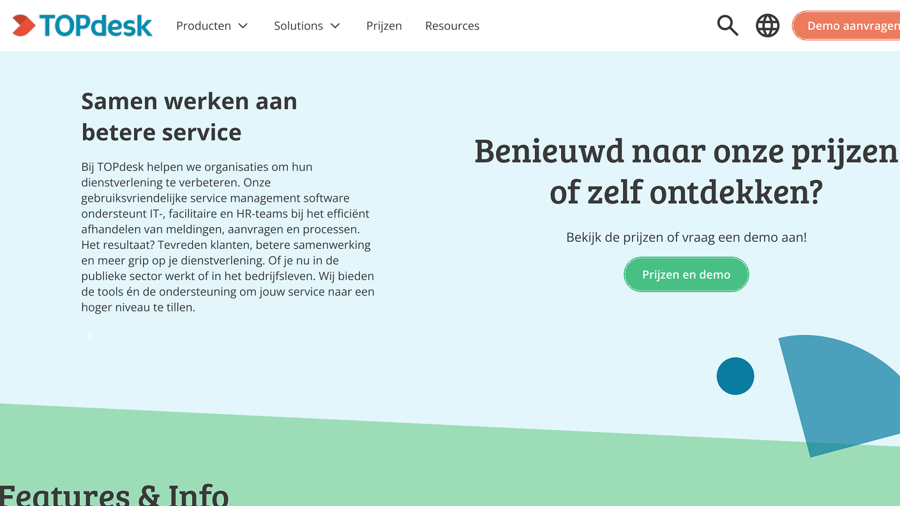
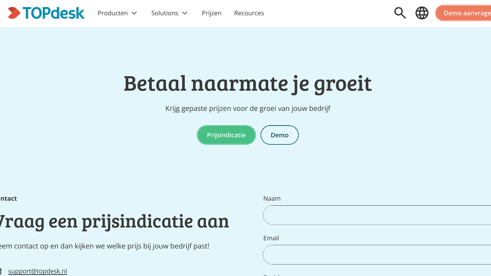

Wat was dit project?
Dit project was een opdracht van een bedrijf om een websiteontwerp te verbeteren. Ik heb gekeken naar hoe de informatie beter kan worden gepresenteerd en hoe de stijl aantrekkelijker kan worden gemaakt.
Design · TOPdesk
In opdracht van TOPdesk heb ik een vernieuwd websiteconcept ontworpen. Het project richtte zich op een duidelijke structuur, sterke visuele keuzes en een modernere gebruikerservaring.

Dit project was een opdracht van een bedrijf om een websiteontwerp te verbeteren. Ik heb gekeken naar hoe de informatie beter kan worden gepresenteerd en hoe de stijl aantrekkelijker kan worden gemaakt.
Ik heb het ontwerp verder uitgewerkt en er een sterke, overzichtelijke basis van gemaakt. Het resultaat was een concept dat beter aansloot bij de wensen van de opdrachtgever en de gebruiker.

